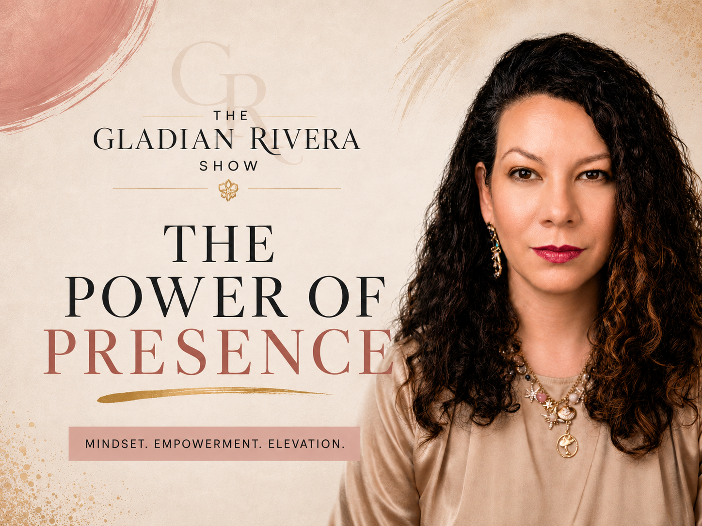
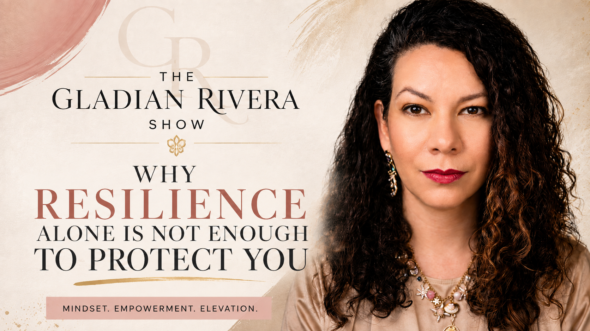

A new podcast
The Gladian
Rivera Show
Candid conversations and personal reflections on leadership, resilience, entrepreneurship, technology, creativity, and the experiences that shape who we become.
Ideas. Impact. Transformation.
Start before
you feel ready.
Some conversations are polished. Others are honest. The Gladian Rivera Show makes room for both—bold ideas, lived experience, and the messy reality of becoming.
Each episode is an invitation to question convention, move through uncertainty, and build a life on your own terms.
Episodes

The Power of Presence
Most entrepreneurs are chasing attention — the real competitive advantage is the ability to give it. Gladian makes the case that presence is a business asset, a trust builder, and one of the last human advantages left in an AI-driven world.

Why Resilience Alone Is Not Enough to Protect You
Resilience gets you through — but it isn't a strategy on its own. Gladian breaks down what actually protects you when resilience alone runs out: boundaries, systems, and support built before you need them.

The Audacity of Resilience
What does it take to start before you feel ready? Gladian opens up about the eight-month delay before recording her first episode, the fear of stepping out from behind the curtain, and why beginning can be an act of resilience.
As Seen In

Divine Grace Corcio
The Sovereign Leader
On operations consulting, scalable systems, and AI integration for growing businesses.

Refine & Shine Podcast · Ep. 139
Burned Out and Overwhelmed?
On leadership, burnout, business systems, and the evolving role of AI at work.

Get Rooted Radio · Erica Gifford Mills
Resilience, Redemption, and the Ripple Effects
On healing, accountability, and overcoming vicarious trauma.
The conversation continues
Subscribe, listen,
and begin anyway.
New episodes land on YouTube and Spotify. If this one resonates, share it with someone who's been waiting for permission to begin.